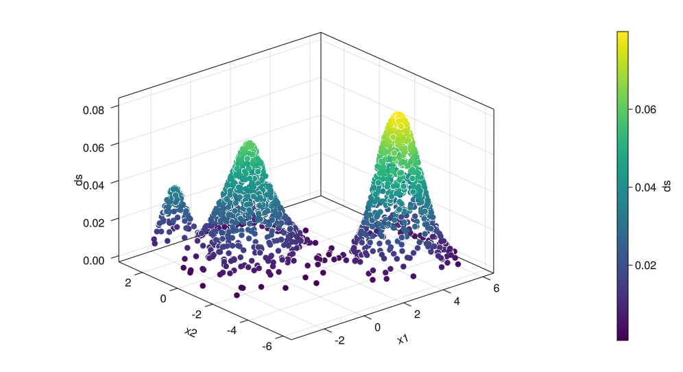
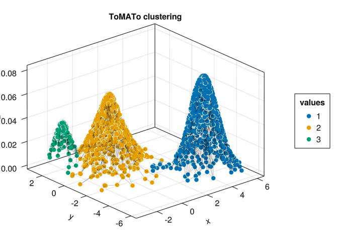
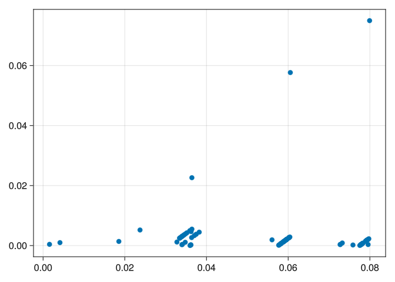
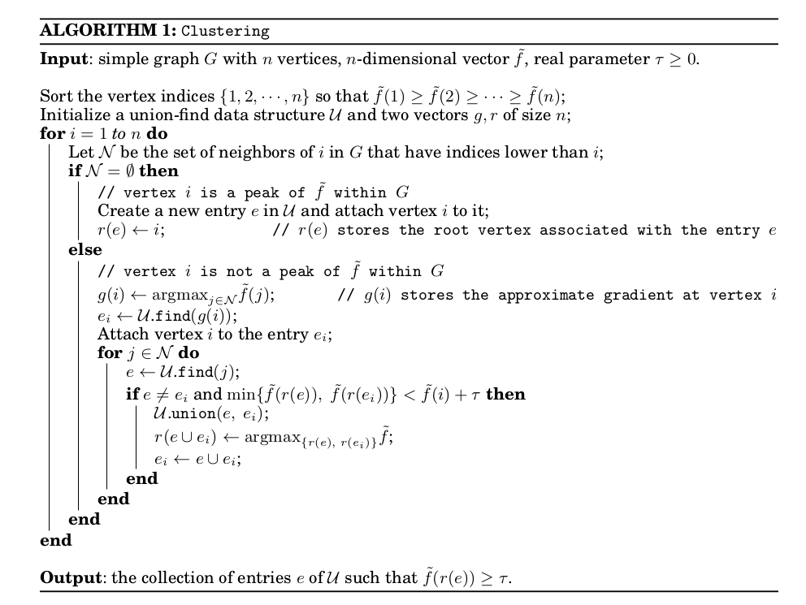

using ToMATo
import GeometricDatasets as gd
using AlgebraOfGraphics, GLMakie;
using Random;6 ToMATo
Given a pointcloud \(X\), how topology can help us in creating clusters?
Let’s understand the ToMATo algorithm (see the original paper (Chazal et al. 2011)) with an example and pretend we are actually inventing it. How fun!
6.1 Inspiration
Let’s load some packages first
Suppose \(X\) is the following dataset:
seed = MersenneTwister(0) # setting some seed
X = hcat(
randn(seed, 2, 800)
, randn(seed, 2, 800) .* 0.8 .+ (4, -4)
, randn(seed, 2, 100) .* 0.3 .- (2, -2)
)
df = (x1 = X[1, :], x2 = X[2, :])
plt = data(df) * mapping(:x1, :x2)
draw(plt)
We can see two big clusters and possibly a small one.
Let’s make a note-so-absurd supposition that our data is generated by some normal distribuitions (in our case, it really is; in general this can be false). Then, intuitively, the mean (or the center) of each distribution is the point with the highest density, ie, with more points close to it, because it is in the mean of the distribution.
6.1.1 Density
We can estimate the density of a dataset as follows
ds = gd.density_estimation(X, h = 0.5)
df = (x1 = X[1, :], x2 = X[2, :], ds = ds)
plt = data(df) * mapping(:x1, :x2, color = :ds)
draw(plt)
The precise definition of the density of a point \(x \in X\) is
\[ \text{dens}(x) = \dfrac{1}{|X|} \cdot \sum_{y \in X} \text{exp} \left(-\dfrac{d(x, y)^2}{h^2} \right) \]
where \(\text{exp}(x) = e^x\). Informally, we want that points close (ie. small distance) to many other points have a high density; this is why we calculate the distance from \(x\) to \(y\) and put it inside an exponential with a minus sign. We then calculate the mean of all these values.
Now we put this density estimation on another axis and plot it
axis = (type = Axis3, width = 800, height = 450)
df = (x1 = X[1, :], x2 = X[2, :], ds = ds)
plt = data(df) * mapping(:x1, :x2, :ds, color = :ds)
draw(plt; axis = axis)
Now we have mountains. Next, we will describe a sort of “mountain climbing” algorithm that will assign each point to its direct peak, like the path a point would take to climb the mountain in the fastest way.
6.2 Climbing mount topology
The idea now is that given a point \(x\):
if \(x\) is the highest point in its corresponding mountain, then it is a new cluster;
otherwise, we will we seek for the highest neighbor of \(x\), say \(x'\) and say that the cluster of \(x\) is the same of \(x'\).
To do that, we need to define a notion of “neighborhood” in this dataset. The easiest way is to define a graph whose vertex set is \(X\) and edges connect neighbor points. Fortunately, the ToMATo package has a function that does exactly that. You are welcome!
g = proximity_graph(
X
, epsilon_ball_or_knn(0.5, min_ball_points = 4, max_ball_points = 6, knn_points = 3)
){1700, 9139} undirected simple Int64 graphThe graph \(g\) above is constructed as follows: given \(x \in X\), we create a ball with radius \(0.2\) around \(X\) and do the following:
- Are there less than 4 points in the ball? If yes, then we connect \(x\) to its 2 closest points; if no, we connect \(x\) to its 6 (at maximum) closest points in the ball. In short: if the ball has not the amount of points we stipulated, then we use knn search.
These numbers obviously are arbitrary and can be changed at will.
Let’s see the result of our algorithm:
X2 = vcat(X, ds')
clusters, _ = tomato(X, g, ds, 0)
fig, ax, plt = graph_plot(X2, g, clusters .|> string)
fig┌ Warning: Axis got passed, but also axis attributes. Ignoring axis attributes (type = Axis3, width = 600, height = 600).
└ @ AlgebraOfGraphics ~/.julia/packages/AlgebraOfGraphics/yhdjr/src/draw.jl:19
Look how many clusters! Something is rotten in the state of Denmark…
6.3 The Comedy of Errors
This tragedy happened because we did not take into account the “false peaks”: peaks that are just a little bump and not a real peak. To merge these small-peaks into the big ones, we need to add the following step:
Let \(\tau\) be a number that denotes how small (in height) a bump must be to be merged (we will show how to calculate \(\tau\) below). Given \(x \in X\), let \(N\) be the set of its neighbors higher than \(x\). Denote by \(x_{max}\) the highest point in \(N\), and \(c_{max}\) its cluster. Now, for each \(y \in N\), ask the following:
- Is the difference of heights of \(x\) and \(y\) less than \(\tau\)? If yes, we merge the cluster of \(y\) with the cluster of \(x_{max}\) (that is: \(c_{max}\)). Otherwise, do nothing.
τ = 0.02
clusters, _ = tomato(X, g, ds, τ, max_cluster_height = τ)
X2 = vcat(X, ds')
fig, ax, plt = graph_plot(X2, g, clusters .|> string)
fig┌ Warning: Axis got passed, but also axis attributes. Ignoring axis attributes (type = Axis3, width = 600, height = 600).
└ @ AlgebraOfGraphics ~/.julia/packages/AlgebraOfGraphics/yhdjr/src/draw.jl:19
Now we got something!
But how did we calculate this magic \(\tau\)? Should we just go on guessing real numbers? I hope not!
We usually run the ToMATo algorithm twice. The first time, we put \(\tau = \inf\) and see how the montains of \(X\) merged: we plot the amount of time that each one of these mountains survived.
_, births_and_deaths = tomato(X, g, ds, Inf)
plot_births_and_deaths(births_and_deaths)
Choosing a bigger \(\tau\) (say 0.04) will also merge the small clusters on the left
τ = 0.04
clusters, _ = tomato(X, g, ds, τ, max_cluster_height = τ)
X2 = vcat(X, ds')
fig, ax, plt = graph_plot(X2, g, clusters .|> string)
fig┌ Warning: Axis got passed, but also axis attributes. Ignoring axis attributes (type = Axis3, width = 600, height = 600).
└ @ AlgebraOfGraphics ~/.julia/packages/AlgebraOfGraphics/yhdjr/src/draw.jl:19
At the end of the day you will still need to define how high a bump can be before merging it.
6.4 The original algorithm
After all this talk, maybe the original algorithm can be better understood!
Here is what we can read in (Chazal et al. 2011):

6.5 Summing up
The ToMATo algorithm needs the following ingredients:
- A metric space \(X\);
- A density function \(f\);
- A graph \(g\) whose vertex set is \(X\) and whose edges mean “these two points are neighbors”;
- A parameter \(\tau\) (which can be calculated as above) that define how high a peak can be and be taken as a “false peak” which we can just merge in the biggest peak close to it.
There are many natural choices for \(f\). The Gaussian density we used has a parameter \(h\) that must be defined. Other nice choice is the distance to measure (as seen in (Chazal et al. 2011)): it calculates the distance between \(x\) and its \(n\) nearest neighbors, where \(n\) need to be defined.
Choosing \(g\) is tricky; which notion of “neighborhood of a point” in \(X\) can you allow? In the example above I chose an method that tries to take points in an \(\epsilon\)-ball and, in case there are too few, take then some of the nearest points.